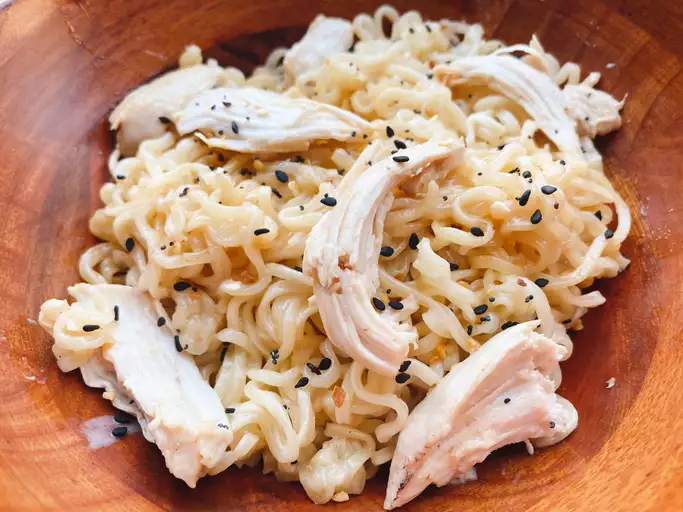

Easy creamy chicken ramen

A handful of ingredients turns an ordinary
package of ramen into a comforting bowl of goodness.
ingredients
- 1 tablespoon unsalted butter
- 2 cloves garlic, minced
- ½ cup chicken broth
- ½ cup whipping cream
- 1 (3 ounce) package ramen noodles (without flavor packet)
- 1 teaspoon reduced-sodium soy sauce
- ¼ cup chopped cooked chicken
- pinch everything bagel seasoning (optional)
Directions
- Melt butter in a heavy skillet over medium heat.
Add minced garlic and cook, stirring, until fragrant, about 30 seconds.
Add chicken broth, cream, and ramen noodles.
Cook, stirring occasionally, until noodles soften, about 3 minutes.
- Add soy sauce and chopped cooked chicken. Allow to get hot.
- Serve garnished with everything bagel seasoning if desired.
Home
Back to Dinner